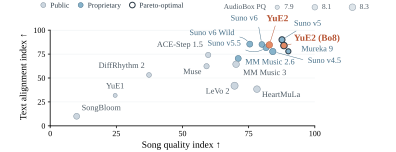
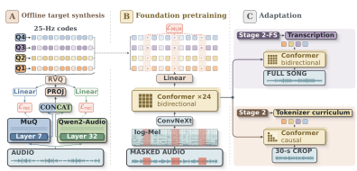
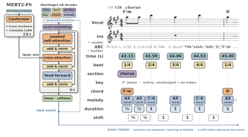

Selected score
Loading selected song…
The generated song
The symbolic score
YuE2 unifies symbolic and audio music generation in one model, with song quality that rivals Suno v5. Through symbolic planning, it writes an editable score, then brings the composition to life with vocals and accompaniment.
Listen to a song, then explore the melody, rhythm, and chords in its symbolic plan.
Selected score
A familiar song can take a different shape. Listen to changes in melody, lyrics, tempo, and arrangement.
The listening selection, gathered across genres and languages.
YuE2 (best-of-8) reaches 6.9632 on SongBench, the highest observed mean among 15 evaluated settings on WildSongBench (192 prompts). Suno v5 scores 6.8721 in the same comparison.
Figure 1

Model architecture
| Rank | System / setting | Prompts | SongBench ↑ |
|---|
September 5, 2026 evaluation · rankings vary by metric.
Download resultsWildSongBench. 192 prompts and 15 system settings. The table reports automatic evaluation scores. Best-of-8 selects one of eight generations by musicality, prompt control, and lyric accuracy.
Figure 1. Song quality combines SongBench and SongEval; text alignment combines MuLan, AllMusicCaps, and prompt control. Both axes show normalized comparison indices. Bubble area represents AudioBox production quality.
MERT2 · Music representations

Across its two evaluated encoders, MERT2 has the highest observed score on 14 of 15 metrics in this comparison, spanning tagging, key, genre, rhythm, and emotion.
| Benchmark / metric | Best published baseline | MERT2-30s | MERT2-300s |
|---|---|---|---|
| MTT · TaggingROC-AUC | 91.70PupuJEPA-Large | 91.91 | 91.74 |
| MTT · TaggingAverage precision | 40.80PupuJEPA-Large | 41.29 | 41.20 |
| GiantSteps · KeyRefined accuracy | 66.10PupuJEPA-Large | 66.97 | 67.05 |
| GTZAN · GenreAccuracy | 86.90PupuJEPA-Large | 91.72 | 90.69 |
| GTZAN · BeatF1 | 91.00PupuJEPA-Large | 90.59 | 90.57 |
| EmoMusic · ValenceR² | 62.50PupuJEPA-Large | 63.23 | 63.52 |
| EmoMusic · ArousalR² | 78.50PupuJEPA-Huge | 80.01 | 78.14 |
| MTG-Jamendo · InstrumentROC-AUC | 78.40PupuJEPA-Large | 80.27 | 80.27 |
| MTG-Jamendo · InstrumentAverage precision | 21.20PupuJEPA-Large | 22.89 | 23.51 |
| MTG-Jamendo · Mood / themeROC-AUC | 76.20PupuJEPA-Large | 79.44 | 78.74 |
| MTG-Jamendo · Mood / themeAverage precision | 15.50Dasheng-1.2B | 16.68 | 15.74 |
| MTG-Jamendo · GenreROC-AUC | 86.30AudioMAE++ | 88.01 | 87.98 |
| MTG-Jamendo · GenreAverage precision | 20.10PupuJEPA-Large / PupuJEPA-Huge | 21.22 | 20.66 |
| MTG-Jamendo · Top 50ROC-AUC | 83.10AudioMAE++ / PupuJEPA-Huge | 84.18 | 84.13 |
| MTG-Jamendo · Top 50Average precision | 31.10AudioMAE++ | 32.17 | 31.62 |
Both encoders have 632M parameters; 30s and 300s denote their training context. These are full-context representation benchmarks. MERT2 reports the best observed results across representations selected using test scores; each ROC-AUC / AP pair uses the same representation.
SheetSage2 · Audio to score

SheetSage2 has the highest point estimate in 10 of 13 benchmark–metric pairs in this comparison, covering beat, downbeat, key, chord, structure, and melody analysis.
| Benchmark / task | Metric | Best comparison | SheetSage2 |
|---|---|---|---|
| GTZANBeat | F1 | 88.75Beat This! | 85.65 |
| osu2017Beat | F1 | 91.55Madmom | 92.29 |
| GTZANDownbeat | F1 | 78.28Beat This! | 79.51 |
| osu2017Downbeat | F1 | 84.99Beat This! | 91.97 |
| GiantStepsKey | Weighted score | 74.62Madmom | 77.73 |
| GTZANKey | Weighted score | 74.43S-KEY | 75.77 |
| osu2017Chord | Maj/min | 84.59Jiang et al. 2019 | 90.08 |
| Chords1217Chord | Maj/min | 84.09ChordFormer | 83.81 |
| HarmonixSetStructure | Accuracy | 80.03SongFormer | 80.51 |
| HarmonixSetStructure | Boundary F1 · 0.5 s | 70.63SongFormer | 67.96 |
| HarmonixSetStructure | Boundary F1 · 3 s | 79.50SongFormer | 82.86 |
| RWC-PopMelody | Vocal pitch-class F1 | 62.71SheetSage1 | 82.51 |
| RWC-PopMelody | Full pitch-class F1 | 64.02SheetSage1 | 75.29 |
Results use one model selected by validation loss. Melody F1 measures pitch-class notes; structure F1 measures section boundaries at the stated tolerance. On Chords1217, ChordFormer uses five-fold cross-validation, while SheetSage2 evaluates one fixed model on all 1,217 tracks.
Full comparison includes SheetSage1, Madmom, and task-specific systems.
Download all results